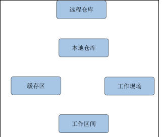

https://zhuanlan.zhihu.com/p/22734098
首先，回顾下git代码存在的5个区域， 分别是 工作区间、工作现场、缓存区（或叫暂存区）、本地仓库（或叫当前分支）、远程仓库（或叫远程分支）；如下图：

1.缓存区代码覆盖工作区代码
场景： 缓存区存有上次改动代码，即之前有执行：
git add
当前工作区间代码想废弃， 可将缓存区中代码覆盖之：

对应指令：
// 将缓存区某一文件代码 覆盖本地工作区：
git checkout -- testReset.txt
// 将匹配的文件覆盖：
git checkout -- *.txt
// 将所有文件覆盖：
git checkout -- .
2.本地仓库代码覆盖缓存区代码
场景：发现之前add的文件不需要了，又不想工作区间重新改回去。

对应指令：
// 将本地仓库某一文件覆盖缓存区：
git reset HEAD testReset.txt
// 将匹配的文件覆盖缓存区：
git reset HEAD *.txt
// 将所有文件覆盖缓存区：
git reset HEAD .
注意： 改变的是缓存区代码， 工作区间代码不变（编辑器代码不会改变）
3.本地仓库代码覆盖工作区代码（常用）
上述两场景在实际开发中没那么常用，接下来 本地仓库 代码 覆盖 工作区间 代码 则经常会用到。
场景： 当前 工作区间 代码混乱（一般更新或合并分支后） ， 废弃当前改动；

对应指令：
// 将本地仓库某一文件代码 覆盖本地工作区：
git checkout head testReset.txt
// 将本地仓库所有文件代码 覆盖本地工作区：(谨慎操作)：
git checkout head .
我们知道本地仓库中有一个commit 列表， 记录了所有commit的记录， 查看commit列表指令：
// 查看commit id， 查看提交记录（git commit的记录）
git log
git log --pretty=oneline
// 查看以往提交历史（包括 撤销回退 记录）
git reflog
根据commit列表， 工作区间代码能实现更灵活的回退：
// 本地工作区间代码 回退到上一次版本、上上次、前10个版本
git reset --hard HEAD^
git reset --hard HEAD^^
git reset --hard HEAD~10
// 本地工作区间代码 回退到指定版本(“d362816”为commit id）
git reset --hard d362816
4.远程仓库代码覆盖本地仓库代码（清除 未push 的commit）
场景： 有时候合并分支、切换分支、更新代码会导致提交絮乱的问题（没使用--rebase方式），具体体现在自动生成了commit且工作区间 代码很多冲突。使工作区间代码跟线上代码一致且删除新生成的commit。

对应指令：
// 本地工作区间代码回退到远程版本
git reset –-hard origin/master
写到了git reset指令， 就不得不说下它与 git revert 的区别：
1. git revert是用一次新的commit来回滚之前的commit，git reset是直接删除指定的commit。
2. 在回滚这一操作上看，效果差不多。但是在日后继续merge以前的老版本时有区别。因为git revert是用一次逆向的commit“中和”之前的提交，因此日后合并老的branch时，导致这部分改变不会再次出现，但是git reset是直接把某些commit在某个branch上删除，因而和老的branch再次merge时，这些被回滚的commit应该还会被引入。
3. git reset 是把HEAD向后移动了一下，而git revert是HEAD继续前进，只是新的commit的内容和要revert的内容正好相反，能够抵消要被revert的内容。
git reset 与 git revert区别图：


5.远程仓库代码回滚（线上代码回滚）
场景： 提交了一个commit（该提交包含很多文件）， 发现有问题， 需要回滚， 将线上分支（master）回滚到上一次commit;
网上有删除分支进行线上代码回滚的教程， 那种操作其实很危险， 因为一般线上的分支是master分支， 而这个分支不允许删除。
合理一些的是使用 git reset或git revert方式进行回滚；
git reset方式图解：

git revert方式图解：

我们可以使用git revert将新的commit替换掉;（不用git reset而用git revert的原因是保留commit方便后续代码恢复）
对应指令：
// 替换掉上次提交的代码文件（上次的commit记录会保留）
git revert HEAD
git commit -m "回滚上次commit"
git push origin master